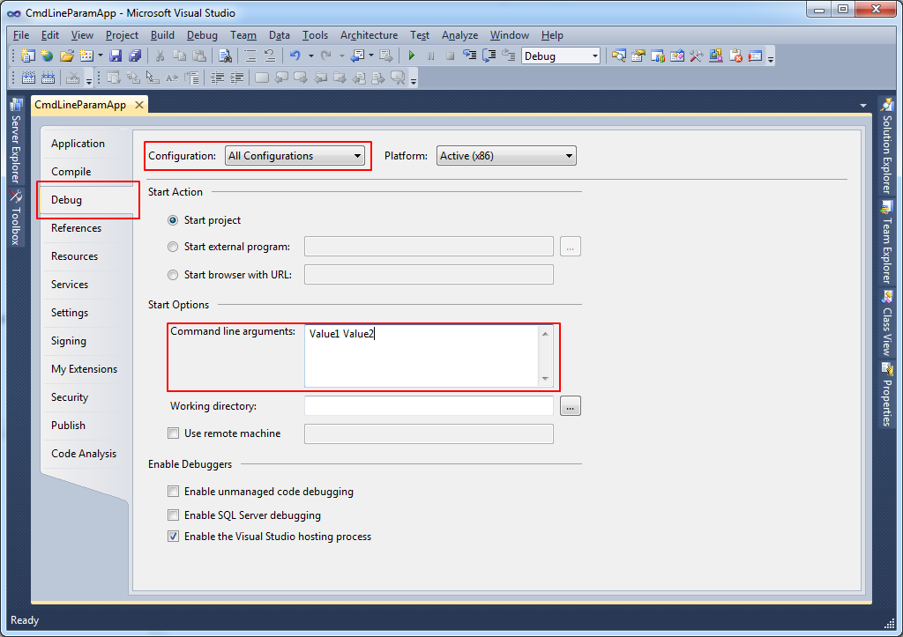

This is a sample for creating a Visual Basic Windows Application with two optional, command line parameters.
Building the Sample
Setting up of Input Command Line Parameters can be done in two ways
I) Setting up in Visual Studio
II) Setting up in Dos Batch
i) Select Debug Tab
ii) Set Configuration to All Configurations
3. Set Command Line Parameter Values each separated by space...
Refer the snapsot to set the command line parameters in the project settings.

II) Setting Up Input Parameters in Dos Batch program
Create a batch program in Doc to supply input parameters to the VB.Net Application.
1. Dos Batch reads input from the user
2. Calls the VB.Net application by passing the user input.
A sample Batch Program AppLauncher.bat is available inside the bin folder.
Description
How does this sample solve the problem?
You can include code snippets, images, videos.
@echo off cls echo ***************Application LAUNCHER****************** :inputCode Set /P param1=Enter Parameter 1: if "%param1%"=="" goto inputCode :inputName Set /P param2=Enter Parameter 2: if "%param2%"=="" goto inputName echo Launching Application.......... start CmdLineParamApp.exe %param1% %param2% exit
' Retrieve & Store the Command Line Parameters
Dim cmdLineParams As String() = Environment.GetCommandLineArgs()
' Check for command Line Parameter (if any)
If cmdLineParams.Length > 2 Then
Me.param1 = cmdLineParams(1)
Me.param2 = cmdLineParams(2)
' Check Input Parameter for null/empty/white-space characters
If String.IsNullOrWhiteSpace(param1) Then
MessageBox.Show("Parameter 1 Invalid", "Command Line Parameter", MessageBoxButtons.OK, MessageBoxIcon.Error)
End If
If String.IsNullOrWhiteSpace(param2) Then
MessageBox.Show("Parameter 2 Invalid", "Command Line Parameter", MessageBoxButtons.OK, MessageBoxIcon.Error)
End If
Else
MessageBox.Show("Optional Input Parameters", "Command Line Parameter", MessageBoxButtons.OK, MessageBoxIcon.Information)
End If
@echo off cls echo ***************Application LAUNCHER****************** :inputCode Set /P param1=Enter Parameter 1: if "%param1%"=="" goto inputCode :inputName Set /P param2=Enter Parameter 2: if "%param2%"=="" goto inputName echo Launching Application.......... start CmdLineParamApp.exe %param1% %param2% exit
For more information on Command Line Parameters, see
SYSTEM.ENVIRONMENT.GETCOMMANDLINEARGS);k(VS.OBJECTBROWSER);k(TargetFrameworkMoniker-%22.NETFRAMEWORK%2cVERSION%3dV4.0%22)&rd=true">http://msdn.microsoft.com/query/dev10.query?appId=Dev10IDEF1&l=EN-US&k=k(SYSTEM.ENVIRONMENT.GETCOMMANDLINEARGS);k(VS.OBJECTBROWSER);k(TargetFrameworkMoniker-%22.NETFRAMEWORK%2cVERSION%3dV4.0%22)&rd=true